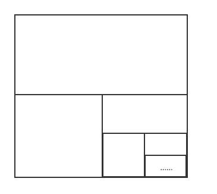

§7.1 常数项级数的概念与性质
引例：数列 21,221,231,⋯2n1,⋯，n→∞lim2n1=0
构造新数列
S1S2S3⋮Snn→∞limSn=21=21+221=21+221+231=21+221+231+⋯+2n1=1(=21+221+231+⋯+2n1+⋯)

一、常数项级数的概念
- 定义：设有数列 {un}，将 u1+u2+⋯+un+⋯(n=1∑∞un) 称为常数项无穷级数，简称级数。
- 其中，un 称为级数的一般项或通项
- 称 sn=u1+u2+⋯+un 为级数的部分和
- 构造部分和数列 {sn}，求 u→+∞limsn：
- u→∞limsn=s，即 {sn} 收敛于 s，则称 n=1∑∞un 收敛，且收敛于 s
- 此时有 s=n=1∑∞un=u1+u2+⋯+un+⋯，rn=s−sn→0(n→∞)（余项）
- u→∞limsn 不存在，即 {sn} 发散，则称 n=1∑∞un 发散
例题
-
求 n=1∑∞2n1
解：
Sn=21+⋯+2n1=1−2121[1−(21)n]=1−(21)n→1(n→∞)
∴ 原式 =1
-
判断 n=1∑∞n(n+1)1 的敛散性
解：此级数收敛，原因如下
Sn=1×21+2×32+⋯+n(n+1)1=1−21+21−31+⋯+n1−n+11=1−n+11=n+1n→1(n→∞)
即 {Sn} 收敛于 1，故所求级数收敛
-
证明 n=1∑∞n21 收敛
证：n21<n(n−1)1=n−11−n1
Sn=1+221+321+⋯+n21<1+(1−21)+(21−31)+⋯+(n−11−n1)=2−n1<2(上界)
∴n=1∑∞n21 收敛
-
数列 {un} 通项为 un=(−1)n+1，判断 n=1∑∞un 敛散性
解：S2n=0，n→∞limS2n=0；S2n+1=1，n→∞limS2n+1=1
{Sn} 发散 ⇒ 级数发散
-
讨论等比级数
n=0∑∞qn=1+q+q2+⋯+qn+⋯
的敛散性
解：
- q=1 时，Sn=n，发散；q=−1 时，为例4结果，发散
- ∣q∣=1 时，Sn=1−q1−qn
- 当 ∣q∣>1 时，qn→∞(n→∞)，Sn→∞(n→∞)，发散
- 当 ∣q∣<1 时，qn→0(n→∞)，Sn→1−q1(n→∞)，收敛于 1−q1
综上，原级数 ⎩⎨⎧发散，∣q∣≥1收敛于1−q1，∣q∣<1
推论：[等比级数求和公式]
a+aq+⋯+aqn+⋯=1−qa
其中 a 为首项，q 为公比
级数知识解释 0.9˙=1
0.9˙=0.9+0.09+0.009+⋯+0.9×0.1n−1+⋯(是首项为0.9，公比为0.1的等比数列)=1−0.10.9=1
二、收敛级数的基本性质
-
n=1∑∞un 收敛于 s⇒n=1∑∞kun 收敛于 k⋅s（k为常数）
-
n=1∑∞un 收敛于 s，n=1∑∞vn 收敛于 δ⇒n=1∑∞(un+vn) 收敛于 s+δ，n=1∑∞(kun+lvn) 收敛于 ks+lδ
- 推论1：n=1∑∞un 收敛，n=1∑∞vn 发散 ⇒ n=1∑∞(un+vn) 发散
- 推论2：n=1∑∞un 发散，n=1∑∞vn 发散 ⇒ n=1∑∞(un+vn) 无法确定
-
在级数中删去、添加或改变有限项不改变收敛性，但级数的和会改变
-
n=1∑∞un 收敛，则对其中任意添加括号后产生的新级数也收敛
-
级数收敛的必要条件
n=1∑∞un收敛⇒n→∞limun=0
例题
证明
2−11−2+11+3−11−3+11+⋯+n−11−n+11+⋯
发散
证：令 un=n−11−n+11=n−12
n=2∑∞n−12=n=1∑∞n2→ 证明 n=1∑∞n1（调和级数）发散
反证法：设 n=1∑∞n1 收敛于 s，则 {sn} 收敛于 s，{s2n} 收敛于 s
S2n−Sn=n+11+n+21+⋯+n+n1≥n+n1+n+n1+⋯+n+n1(n项)=21
n→∞lim(S2n−Sn)≥21，与假设矛盾
∴n=1∑∞n1 发散，从而原级数发散